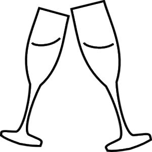

Experience a ride on the wind in a hot-air ballon!
Click in view to stop/restart adding balloons, click on a balloon to sink it!
Get carried away with us!
What to expect on your special day...

Your adventure begins at dawn at our launch location in Aberdeen, BC (approx. 30 minutes from Oskange) in the early morning. We start by inflating the balloon, an amazing sight in itself. Feel free to watch or join in!
After the balloons are inflated and all safety checks complete, we are ready to fly. Our FAA-licensed pilots will take you on an approximately one-hour flight, depending on which direction the winds are blowing on flight day. During that time, you’ll see the wine making hills of the Pleasant Valley, the twisting Veendana River, 10 mountain peaks on a clear day and several other balloons flying around you. It’s hard to do justice to the majesty of the scene but we think you will be impressed.
Upon landing, our ground crew will meet you to pick you up and deflate your balloon. You are very welcome to participate, however, it’s completely fine if you choose to stand by and admire the process. After the balloons are deflated and put away, board our vans for a 30-minute ride back to the launch site where you will be served a sparkling brunch. Plan on approximately 4 hours for the whole experience.